Six simulations you can touch
Each one is driven by the real equations: a trajectory integrated from Apollo 11's stage data, light rays bent through Schwarzschild spacetime, planets placed by the Jet Propulsion Laboratory's (JPL) orbital elements.
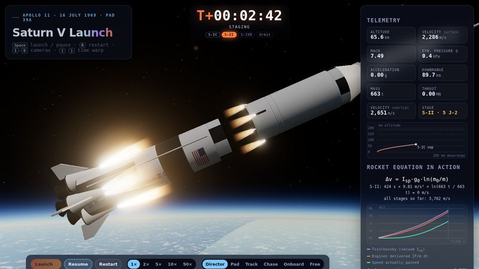
Saturn V launch
Count down from T−10 on Launch Complex 39A, feel ignition, clear the tower and ride all three stages to a 185 km parking orbit. Six cameras, time warp, live telemetry, and the rocket equation checked against what the engines actually delivered.
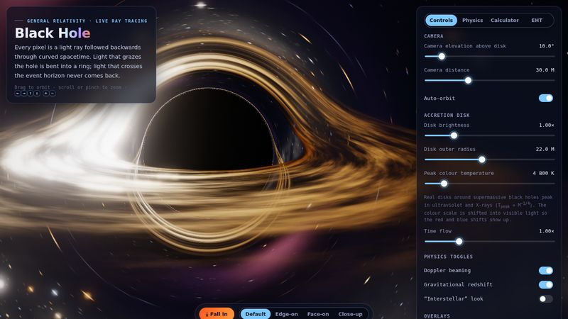
Black hole
Every pixel is a light ray traced backwards through curved spacetime. Tilt the disk, switch off Doppler beaming, then fall in.
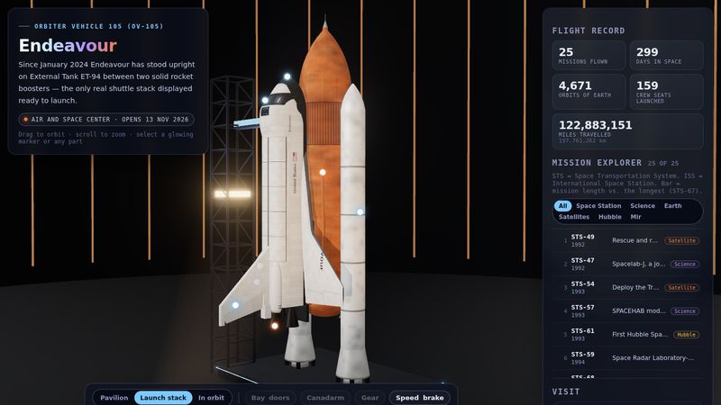
Space Shuttle Endeavour
The California Science Center's orbiter, stacked for launch as in the new Samuel Oschin Air and Space Center. Open the bay, deploy the arm, explore 25 missions.
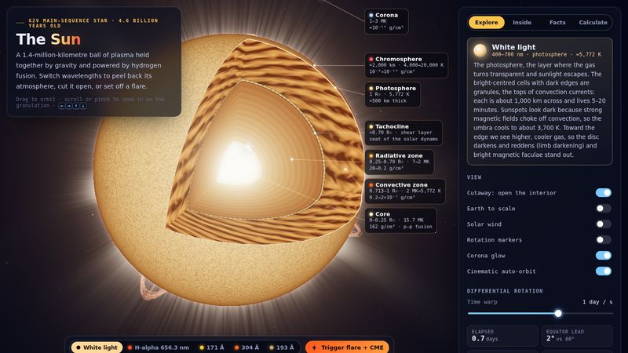
The Sun
Boiling granulation, sunspots and prominences. Switch to the Solar Dynamics Observatory's (SDO) ultraviolet views, trigger a flare, or slice it open.
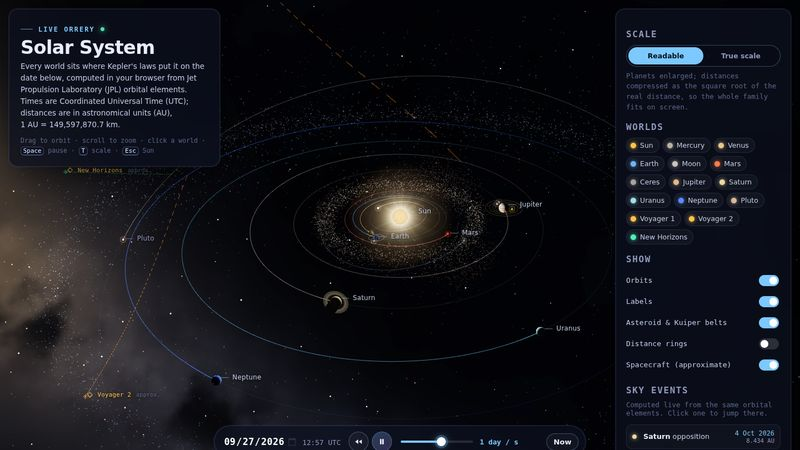
Solar system
Every planet where it really is today, from JPL's Keplerian elements. Fly to any world, see light-time from Earth, find the next opposition.
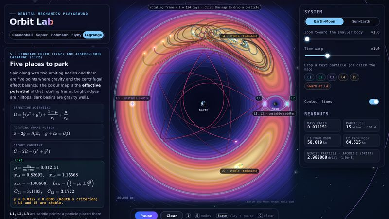
Orbit Lab
Newton's cannonball, Kepler's equal areas, Hohmann transfers, gravity assists and Lagrange points, each with the equation beside it.
The maths, the pictures, the history, the paperwork
Equation Atlas
From Kepler to Friedmann: every equation with a plain-language meaning, a worked example using real mission numbers, a live calculator and a plot. Try the rocket equation above.
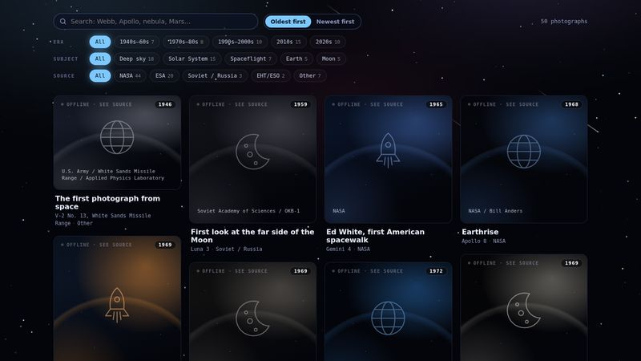
Gallery
Fifty photographs that changed how we see ourselves, from the first picture taken from space to the Webb telescope's deep fields, each with the story behind it.
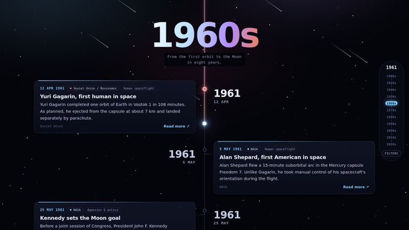
Timeline
Tsiolkovsky's equation in 1903 to Artemis II's crewed lunar flyby in April 2026, filterable by agency.
Mission Library
79 primary sources: flight manuals, post-flight reports, payload user's guides, standards, datasets and the tools professionals use, with a reading path.
From the kitchen table to a flight computer you designed
Twenty step-by-step builds in five stages. Each has a bill of materials, the physics, a data sheet, and where it applies, 3D-printable parts (OpenSCAD + STL), firmware and a KiCad printed circuit board (PCB).
- Level 0Kitchen tableunder $10Stomp rocket · balloon rocket · pinhole Sun projector · impact craters
- Level 1Garage & backyard$10–50Water rocket with printed nose cone · DVD spectroscope · cloud chamber
- Level 2First real rockets$50–150Certified-motor model rocket · 3D-printed airframe · barometric altimeter
- Level 3Avionics$100–300RP2040 flight-computer PCB · LoRa telemetry ground station · star tracker
- Level 4Research grade$150+High-power certification · near-space balloon · hydrogen-line radio telescope · exoplanet transits
A Python toolkit for doing real astrodynamics
Seven command-line simulations with tests: a black hole ray tracer, a symplectic N-body integrator, a multistage ascent model, a Lambert solver for Earth–Mars launch windows, a transit search, stellar physics and ground tracks.
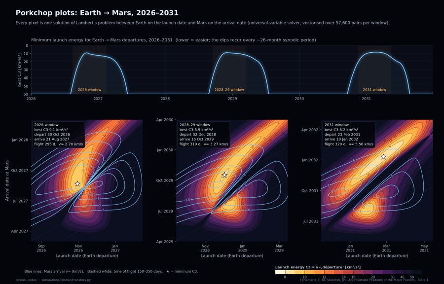
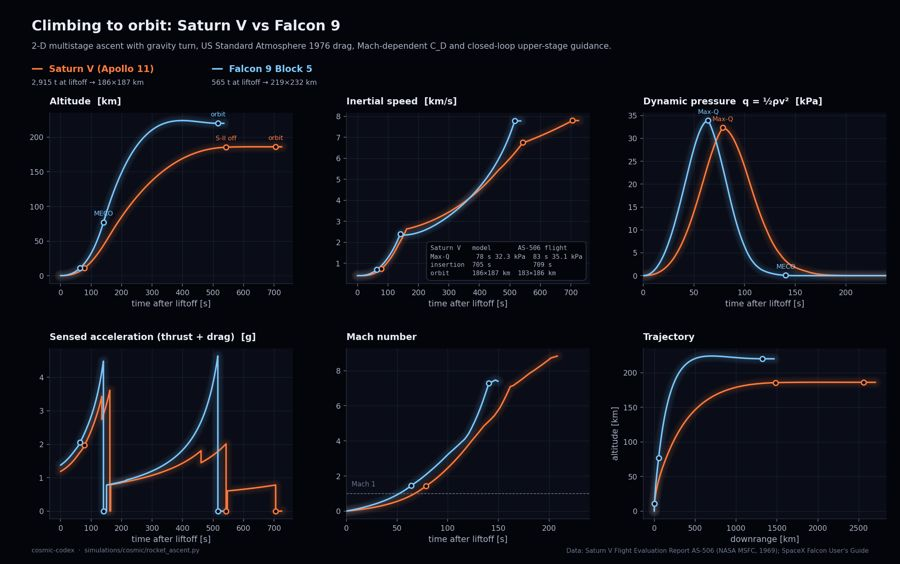
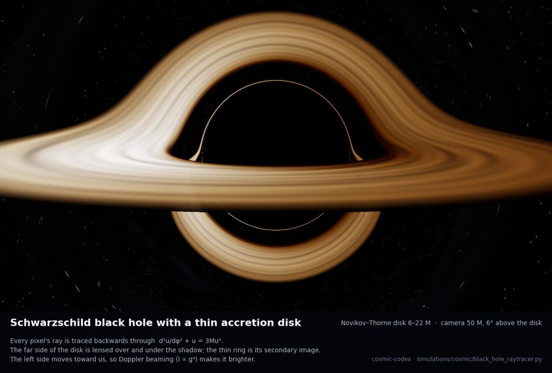
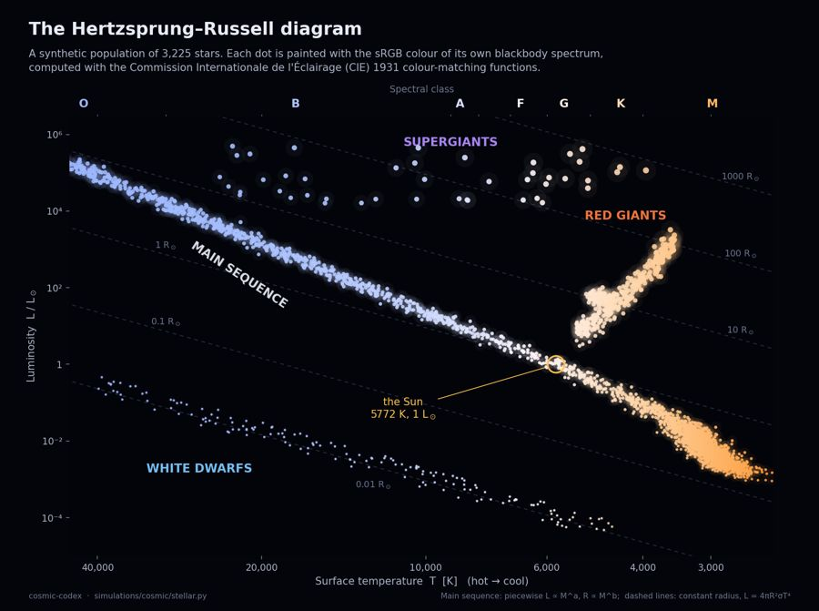
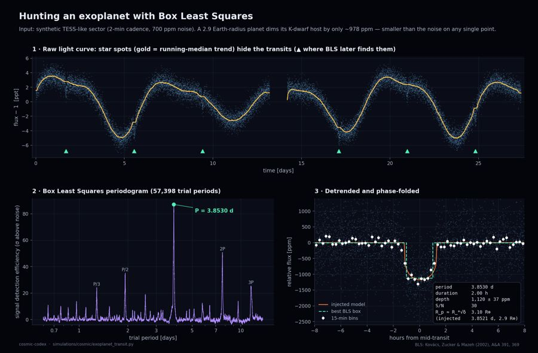
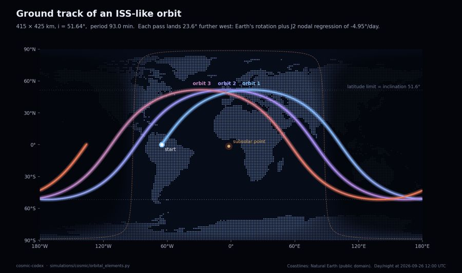
# clone, install, run
git clone https://github.com/Normansrule/cosmic-codex.git && cd cosmic-codex
python3 -m venv .venv && source .venv/bin/activate
pip install -r simulations/requirements.txt
python simulations/run.py blackhole # → outputs/black_hole.png
python -m pytest simulations/tests -q # physics checksBuilt with, and inspired by
Engines
three.js for every 3D scene, GSAP for motion, KaTeX for equations, NumPy and Matplotlib for the Python toolkit. All vendored, so the site works without a build step.
Design references
Interaction ideas re-implemented in plain CSS and JavaScript from Magic UI, React Bits, Animate UI and Motion Primitives; explorable-explanation style from llm-viz and Transformer Explainer; 3D craft from Bruno Simon's folio.
Data & imagery
NASA, the Jet Propulsion Laboratory (JPL), ESA, the California Science Center and many others. Every number on every page carries its source; see CREDITS.md. Not affiliated with or endorsed by any of them.